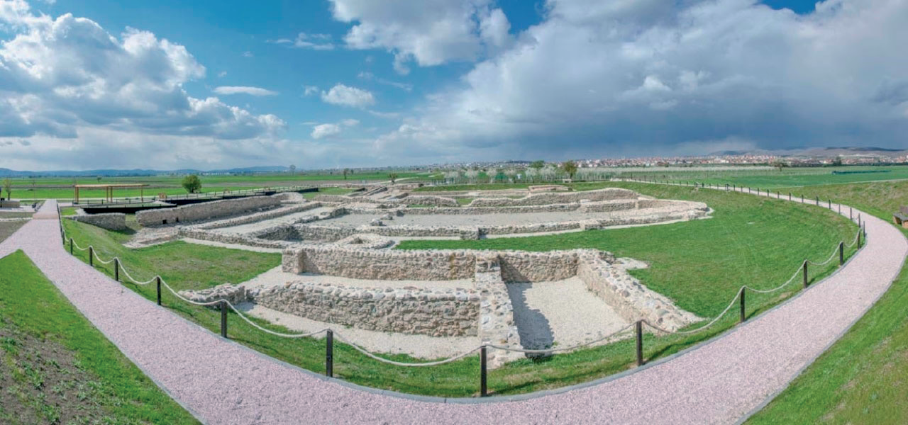
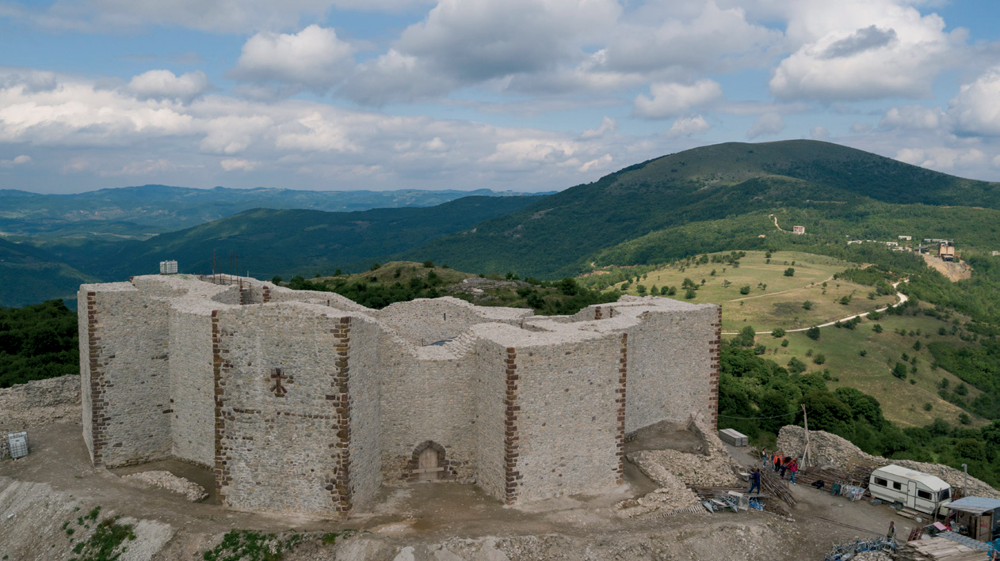

Vendbanimet arkeologjike
Situatë: Arta, bashkë me prindërit dhe vëllanë e saj, donin t’i vizitonin vendet arkeologjike të Kosovës. Arta nuk kishte dëgjuar më parë për to dhe nuk e dinte se ç’ishin. Prindërit ia shpjeguan se objektet arkeologjike tregonin mënyrën e jetesës, kulturën, qytetërimin e popujve të lashtë, që nga epoka e vjetër e gurit e deri në mesjetën e hershme. Ato mund të jenë vendbanime, ndërtesa të mëdha, si: piramida, ura, tempuj, varre etj.

Vizitën e parë e bënë në Ulpianë. Nëna tregoi se Ulpiana është një monument i trashëgimisë kulturore, në afërsi të Prishtinës. Ulpiana ishte një qytet ilir i rëndësishëm për Mbretërinë Dardane.

Më pas u ndalën në Artanë (Novobërdë), në një kala mesjetare në Komunën e Artanës, mes qyteteve Gjilan dhe Prishtinë.
Artana ka qenë qendër kryesore në kohën e mesjetës, me fortesë (kala) të madhe mesjetare, të ngritur në majë të një vullkani të shuar në formë koni.